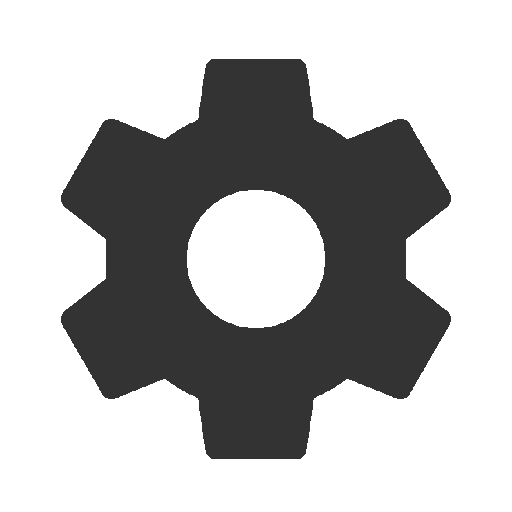

<ion-content no-bounce mode="md">
	<div class="flex-container">
		<div class="flex-child">
			<div>
				<div class="name">
					{{ employeeName }}
				</div>

				<div class="driving-factor">
					{{ drivingFactor }}
				</div>
				<div class="info">
					Pojazd <br />
					<i *ngIf="!currentVehicle">Pojazd nie wybrany</i>
					<i *ngIf="currentVehicle">{{currentVehicle?.licencePlate}} {{ currentVehicle?.make }} {{ currentVehicle?.vehicleModel }}</i>
					<br />
					Długość geograficzna <br />
					<i>{{ longitude }}</i> <br />
					Szerokość geograficzna <br />
					<i>{{ latitude }}</i>
				</div>
			</div>
		</div>
		<div class="flex-child">
			Lokalizator
			<div class="grid">
				<div class="row">
					<ion-button
						class="action-btn"
						(click)="onTrackerStart()"
						[disabled]="trackingOn || !currentVehicle"
					>
						
					</ion-button>
					<ion-button
						class="action-btn"
						(click)="onTrackerStop()"
						[disabled]="!trackingOn"
					>
						
					</ion-button>
				</div>
				<div class="row">
					<ion-button class="action-btn" (click)="onSettingsClick()">
						
					</ion-button>
					<ion-button class="action-btn" (click)="onSignOut()">
						
					</ion-button>
				</div>
			</div>
		</div>
		<ion-progress-bar
			type="indeterminate"
			color="success"
			*ngIf="showProgressBar"
		></ion-progress-bar>
	</div>
</ion-content>
